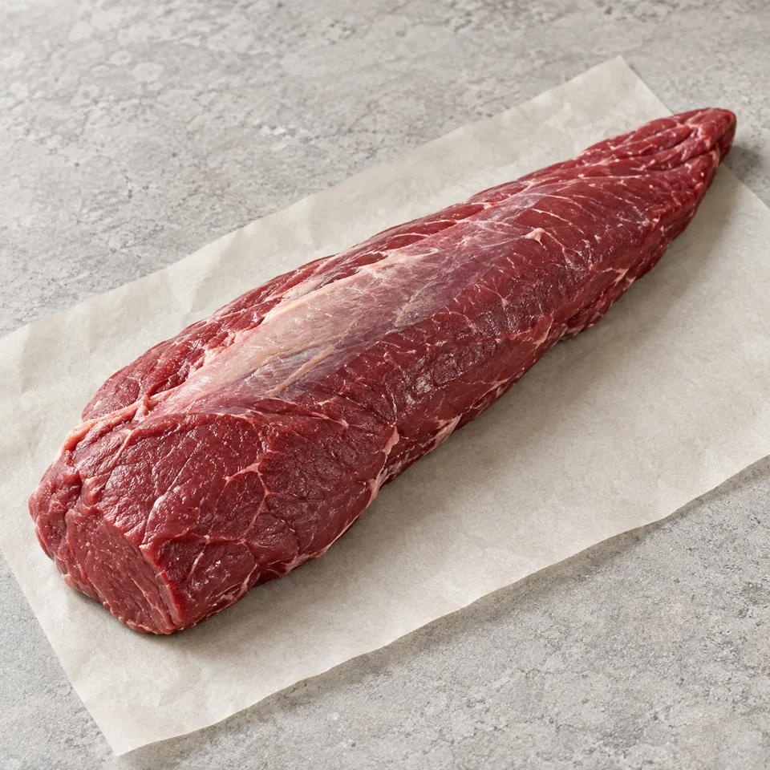

საქონლის ხორცი
საქონლის სუკი
მედალიონებისა და სტეიკისთვის
60 ₾ / კგ
MeatCO · TBILISI
ღორისა და საქონლის ხორცი, სუბპროდუქტები. აირჩიეთ სასურველი ნაწილი — წონასა და მიტანას WhatsApp-ში შევათანხმებთ.

MeatCO-ს ასორტიმენტი
საქონლის ხორცი
მედალიონებისა და სტეიკისთვის
60 ₾ / კგ
ღორის ხორცი
შესაწვავად ან მოსაშუშად
14 ₾ / კგ
ღორის ხორცი
გრილზე ან ღუმელში მოსამზადებლად
20 ₾ / კგ
საქონლის ხორცი
შესაწვავად, მოსაშუშად ან ფარშისთვის
33 ₾ / კგ
ღორის ხორცი
ტაფაზე ან ღუმელში მოსამზადებლად
20 ₾ / კგ
საქონლის ხორცი
ხანგრძლივად მოსაშუშად ან მოსახარშად
26 ₾ / კგ
ღორის + საქონლის
ღორისა და საქონლის ხორცი — შიგთავსისთვის
23 ₾ / კგ
სუბპროდუქტები
შესაწვავად ან პაშტეტისთვის
10 ₾ / კგ
ფოტოები საილუსტრაციოა. ხელმისაწვდომობას, ზუსტ წონას, საბოლოო თანხასა და მიტანის პირობებს შეკვეთის დადასტურებამდე შევათანხმებთ.
MeatCO-ს მიტანის სერვისი
შეკვეთას WhatsApp-ში ვათანხმებთ. ვაკეში, საბურთალოსა და დიდ დიღომში ჩვენი კურიერები მოგიტანენ.
მოგვწერეთ, რომელი ნაწილი და რა რაოდენობა გჭირდებათ. თუ არჩევა გიჭირთ, დაგეხმარებით.
ხელმისაწვდომობას, ზუსტ წონასა და სრულ ღირებულებას შეკვეთის დადასტურებამდე დავაზუსტებთ.
მისამართსა და მიტანის დროს წინასწარ შევათანხმებთ. შეკვეთას ჩვენი კურიერი მოგიტანთ.
ვაკე · საბურთალო · დიდი დიღომი
ახლომდებარე მისამართებზე მიტანა წინასწარ შეათანხმეთ.MeatCO თქვენი ყოველდღიურობისთვის
ბოსტნეული, ხილი და კვერცხი. მონიშნეთ, რა გჭირდებათ — ასორტიმენტსა და ფასს მიმოწერაში დავაზუსტებთ.
რესტორნებისა და კაფეებისთვის
ღორისა და საქონლის ხორცი, სუბპროდუქტები — თქვენი მენიუსთვის. ერთად განვიხილოთ სასურველი ნაწილები, მოცულობა, ფასები და მიწოდების გრაფიკი.
კატალოგში ნაჩვენებია ფასი კილოგრამზე ან ცალზე. თუ ფასი მითითებული არ არის, WhatsApp-ში დავაზუსტებთ. საბოლოო თანხას, მიტანის ჩათვლით, შეკვეთის დადასტურებამდე შევათანხმებთ.
მიტანის ღირებულებასა და დროს თქვენი მისამართის მიხედვით WhatsApp-ში დავაზუსტებთ, შეკვეთის დადასტურებამდე.
გვაქვს ღვიძლი, გული, ენა, თირკმელები, ფაშვი და ფეხები. სახეობას, დამუშავების მდგომარეობას, წონასა და ფასს შეკვეთისას დავაზუსტებთ.
მოგვწერეთ სასურველი ზომა ან რისთვის გჭირდებათ ხორცი. დაჭრისა და დაფქვის შესაძლებლობას შეკვეთის დადასტურებამდე შეგატყობინებთ.
მოგვწერეთ კერძის სახელი ან მომზადების გზა და რამდენი ადამიანისთვის ამზადებთ. შესაფერისი ხორცის შერჩევაში დაგეხმარებით.
დიახ, შეგიძლიათ მოითხოვოთ ბოსტნეული, ხილი და კვერცხი. ხელმისაწვდომობას, რაოდენობასა და ფასს თქვენთან შევათანხმებთ.